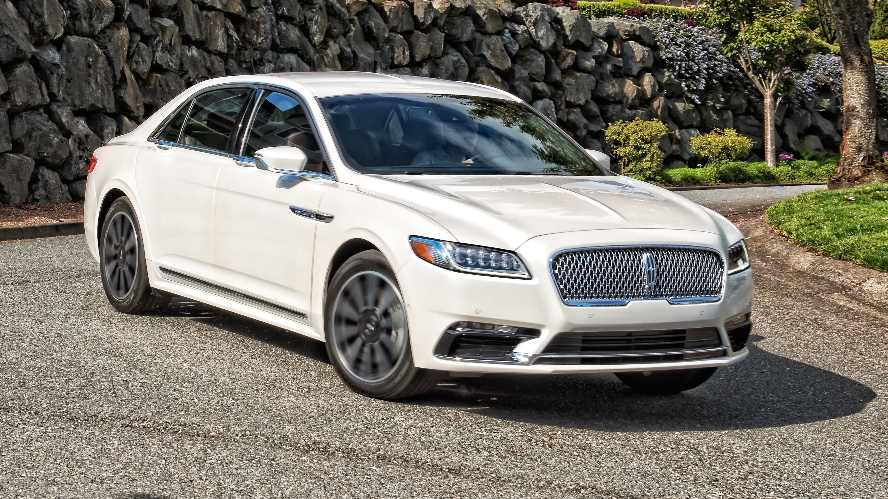
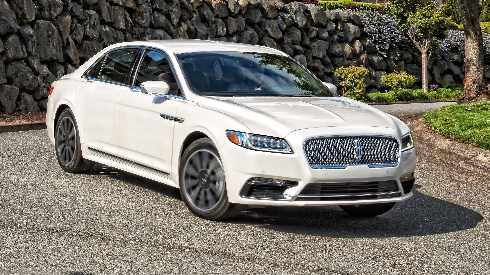

The Lincoln Continental began life as a personal vehicle for Ford Motor Company President Edsel Ford. In 1938, Ford commissioned a one-off design he wanted ready for his March 1939 vacation from company Chief Stylist Eugene T. "Bob" Gregorie. Using the blueprints of the streamlined Lincoln-Zephyr as a starting point, Gregorie sketched a design for a convertible with a redesigned body; allegedly, the initial sketch for the design was completed in an hour. Ford wanted to revive the popularity of the 1929–1932 Lincoln Victoria coupe and convertible but with a more modern approach, reflecting European styling influences for the Continental. By design, the Edsel Ford prototype was essentially a channeled and sectioned Lincoln-Zephyr convertible; although the vehicle wore a conventional windshield profile, the prototype sat nearly 7 inches lower than a standard Lincoln. Along with the massive decrease in height, the running boards were deleted entirely. In contrast to the Zephyr (and in a massive change from the K-Series Lincoln), the hood sat nearly level with the fenders taking advantage of the fact that the engine type and configuration did not need the clearance afforded by the height of the standard Lincoln hood line. To focus on the styling of the car, the chrome trim on the car was largely restricted to the grille; the prototype differed from the eventual production version in that it utilized a somewhat less angular roof line. As with the Lincoln-Zephyr, the prototype utilized a 267 cubic-inch V12 engine, transverse leaf springs front and rear as well as hydraulic drum brakes. The prototype designed by Gregorie was produced on time, making the deadline to be delivered to Edsel Ford in Florida. Interest from well-off friends was high; Edsel sent a telegram back to Michigan that he could sell a thousand of them. In reference to its European-inspired design, the Lincoln-based prototype received its name: Continental. Immediately, production commenced on the Lincoln Continental, with the majority of production being "Cabriolet" convertibles and a rare number of coupes. These were extensively hand-built; the two dozen 1939 models and 400 1940-built examples were built with hand-hammered body panels; dies for machine-pressing were not constructed until 1941. The limited number of 1939 models produced are commonly referred to as '1940 Continentals'.